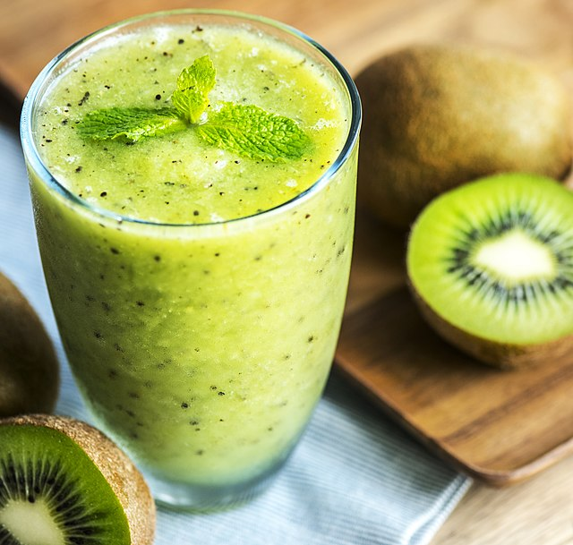

Kiwi Banana Smoothie

An old family recipe, passed down through generations
Best way to wake up your roommates on a sunday is to turn on the blender
at full power to make DangAlak's famous Kiwi Banana Smoothie.
The initial anger will melt away at the first sight of the creamy, green
DangAlak juice.
Ingredients
- Non-dairy milk of your choice | 250 mL
- Three ripe bananas
- Two kiwis
- Protein powder (optional)
- Turmeric | one teaspoon
- Black pepper | just a pinch
- Ice cubes (optional)
Steps
- Peel the kiwis.
- Add everything except the ice to the blender.
- Process until smooth and add the ice cubes.
- Process again until the ice is gone.
- Add some more milk or water if it's still to thick and process again.